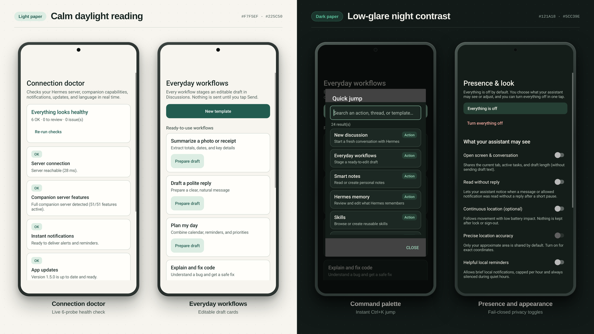
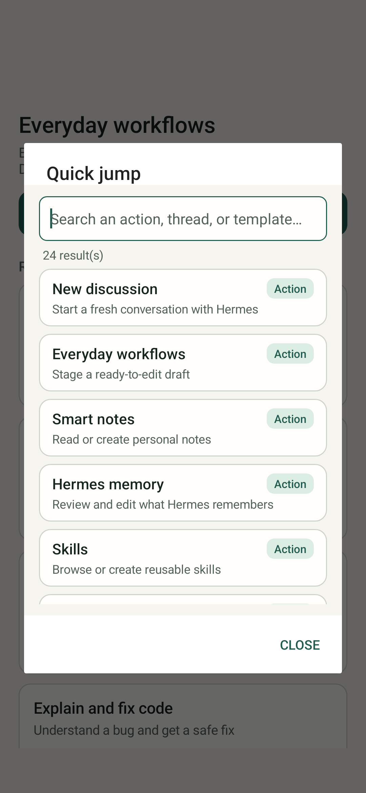
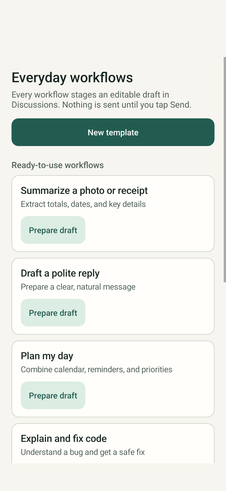
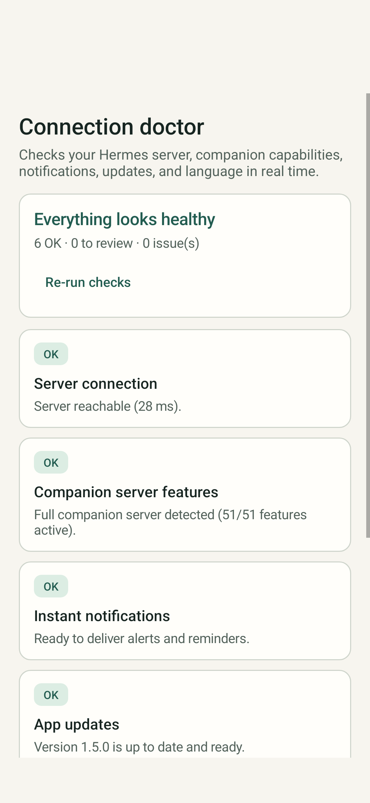
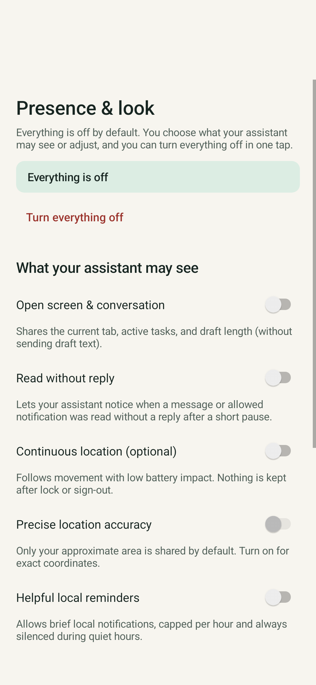

Global command palette (Ctrl+K)
Jump straight to any screen, recent thread, or reusable template with accent-insensitive fuzzy filtering and hardware keyboard Ctrl+K / Cmd+K support inside a FLAG_SECURE overlay.
Chat, review visual code diffs, launch parallel tasks across discussions, and shape your workspace on phone or tablet—backed by your own multi-user Hermes server with zero telemetry and fail-closed security.
Requires our companion server fork at LLM-4-People/hermes-agent for /p/<profile> multi-user routing, concurrent tasks, live UI patches, brain studio, and zero-leak push.

Switch between verified phone and tablet captures rendered directly by Hermes Mobile.

Designed to feel simple for everyday tasks while giving power users and multi-user households complete control.
Jump straight to any screen, recent thread, or reusable template with accent-insensitive fuzzy filtering and hardware keyboard Ctrl+K / Cmd+K support inside a FLAG_SECURE overlay.
Start faster with 6 curated workflows (summarize receipts, draft polite replies, plan your day, review code, compare nearby places, create widgets) plus custom per-profile templates stored in your encrypted local vault—always staged as editable drafts.
Runs 6 parallel non-blocking health checks (server latency, 51/51 companion capabilities with upstream detection, push, app updates, ambient permissions, and language sync) with 1-tap fixes and a strictly redacted safe report copy.
Start parallel runs across multiple discussions for one user without canceling active streams or mixing deltas, while hosting isolated users under one HTTPS domain (/p/<profile>).
Switch threads instantly with lazy history paging, frame-budgeted stream coalescing (0 ms first-token latency), zero-allocation custom views, and automatic bitmap/cache eviction under memory pressure or lock.
Per-profile AES-GCM encrypted storage, persisted unlock backoff against brute-force attempts, Class-3 biometric vault, atomic profile deletion, and Android 16 live update notifications showing active task counts.
Edit memory, manage smart notes, review pattern-gated habit suggestions, search full history via FTS5, browse workspace files and Git diffs, and share notes, skills, surfaces, widgets, tools, artifacts, and threads with other profiles on the same server.
Tailor screens and pin profile-scoped home screen widgets with atomic rollback, and update directly from GitHub Releases with fail-closed SHA-256 and signing-certificate checks.
Every unlocked profile keeps its own encrypted storage, active-run tracker, notification allowlist, and widget ownership. Locking or switching profiles immediately clears decoded caches, dismisses dialogs, and fences late callbacks so zero data ever crosses between users.
Closed-app notifications over Firebase or self-hosted UnifiedPush (ntfy + RFC 8291 Web Push) carry only opaque routing metadata—private message bodies stay on your gateway until you unlock the owning profile.

Real Android 16 (API 36) phone screenshots captured in English across the command palette, everyday workflows, connection doctor, and presence and appearance controls.


Instant accent-insensitive jump across actions, recent threads, and encrypted templates.

Curated everyday starters and encrypted custom templates staging editable drafts.

Six parallel status cards, 51/51 companion check, 1-tap fixes, and safe redacted report.

Fail-closed opt-in presence switches, 1-tap turn everything off, and instant WCAG-AA palettes.